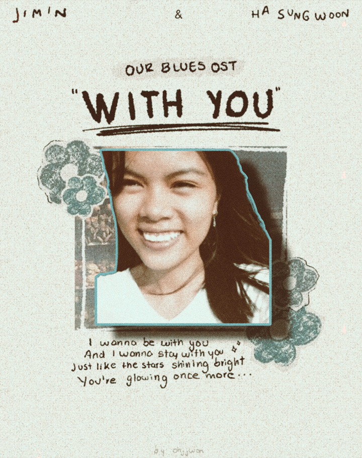
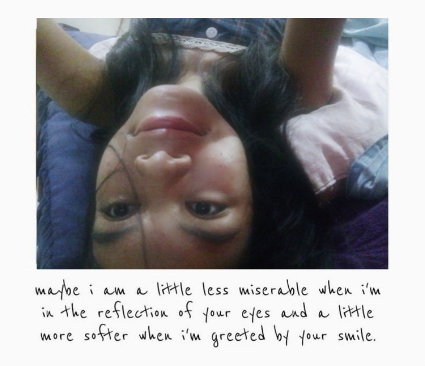

Hi there, pritti Lady May. Ikatulo nani nko nga hinimo nga website, hehe. I guess last nani? Sa season 1, i mean. Kay maghimo pkog daghan puhon paras imo, and naa pay next² season u know. Kabalo sab ka wala pata nahumn. Dli mn sa matured najud ko kaayu pero, I think matawag nanig maturity? Nga even though gpasakitan ko nmo and naa koy nailhan nas imo lahi nga side (which is MAYBE dli ka ganahn), nag stay ghapon ko. Just because of love. Cguro kabasa kag similar ani sa mga books. And maybe lahi sab sa imo ang maturity nmo. I understand. You're not just anyone in my life. You're so dear to me.
I remember niingon kas ako nga giignan kas ate ai² nmo nga byaan tka tungod sa imong batasan, no memee. Even if makabalo ang tanan, makabalo ang tibuok kalibutan, and the world turns it's back on you, always remember memee, I'll always be here for you. No matter what happens. And you can always count on me, just break your pride. I'm always happy to help.
Please don't feel scared about me knowing you. I'm not mad or anything. I'm worried about you. I wonder how you're doing right now. Yes makaingon mn kag lain kag batasan pero, that's not all there is to you memee. Nag suffer sab ka. You have traumas too. You feel pain. That's why I could never get mad or hurt you. Actually dli jud ko makabuhat or makafeel anas imo.
Mianhae lenn is so softy, but not to others tho. Natakdan kos pagka mapride nmo dohh, nagamit nkos mga pepol nag take advantage nko sa college. Tinuod lngg thankk youu memee.
Thank you always for everything, sa mga gifts nga ghatag nmos ako, hinimo nmo gamit imo mga kamot, and sa gifts nga imo gigastuhan. Special kaayu nis ako tanan. Permi nko ni gnadala tanan baya, naas akong bag tanan. I'm so happy. I'll cherish all of this.
Don't forget me, arraseo? And also memee, just like I promised, if naa mn gale mag flirt² or maka crush nko, ignun tka. Nono never jud. If dli ikaw, then wala. Btaw jud memee. I'm serious and genuine.
Ayaw duha² reach out sa ako memee haa. Ayaw kahadlok. Assuming rko. Everything we've said to each other before, I'll make it all come true. Makaya nato ni college life memee, I believe in you.
And for the last time, I just wanna say, I love you. I love you with all I am, memee. I love all of you, and for who you are. Siguro makaingon ka nobody knows you, well I know you, memee. Wala lng cguro ka kabalo. And I don't want anyone else to know you more than I do.
I guess we're all not fully matured pa and not ready for relationship. I know you didn't ask me to stay but, gusto lng sab ko makabalo ka nga naa rako mag stay always even at your worst.
Please don't say "dli tka deserve", "we will never be lovers.", "i don't think i'll ever come back to you." Ayaw nag sukol ani akong essay please. Just read it and leave it be nalang memee. Also, no one deserves me except you😞😞.
And when you're ready, and your ego comes off, let's ask each other forgiveness. I know my mistakes, pero mag ask rko ug forgiveness sa saktong panahon if you ever find yourself again.
They say "loving an avoidant is not for the weak". Then I guess I'm not weak.
Remember memee, no matter what others say, you are pritti beautiful. Arraseo? And there's something within you that makes you unique to others. I've told you this many times.
Take care always memee. I love you always my palangga.
Sincerely yours,
-fallenheart
